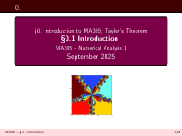
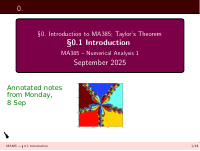

MA385 Files
Slides
1.1: The root-finding problem - Solving nonlinear equations
1.2: Interval Bisection - Solving nonlinear equations
1.3: The Secant Method - MA385 Part 1: Solving nonlinear equations
1.4: Taylor's Theorem - MA385 Part 1: Solving nonlinear equations
1.5: Newton's Method [!! DRAFT !!] - MA385 Part 1: Solving nonlinear equations

0. Introduction - 0. Introduction to MA385
Annotated Slides
1-1-RootFinding.pdf.pdf
1-2-Bisection.pdf.pdf

MA385-0-Intro.pdf.pdf